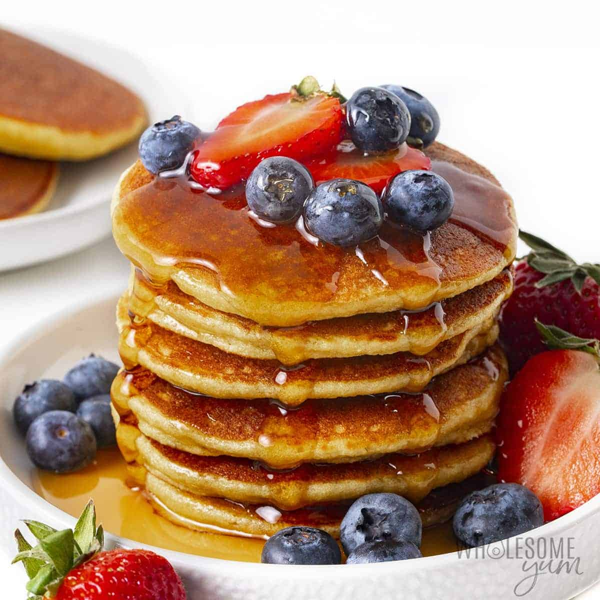

Pancakes

Description:
Indulge in a stack of fluffy, golden pancakes that are sure to brighten
your mornings. Made with simple ingredients like flour, sugar, milk, and
eggs, these pancakes are a classic breakfast favorite. Whether topped with
a drizzle of maple syrup or adorned with fresh fruits and whipped cream,
each bite offers a delightful combination of soft texture and delightful
flavors. Enjoy a comforting breakfast treat that is sure to satisfy your
pancake cravings.
Ingredients:
- 1 cup all-purpose flour
- 2 tablespoons granulated sugar
- 2 teaspoons baking powder
- 1/2 teaspoon salt
- 1 cup milk
- 1 large egg
- 2 tablespoons unsalted butter, melted
- Additional butter or oil for cooking
- Optional toppings: maple syrup, fresh fruits, whipped cream
Steps:
-
In a large mixing bowl, whisk together the flour, sugar, baking powder,
and salt.
-
In a separate bowl, whisk together the milk, egg, and melted butter.
-
Pour the wet ingredients into the dry ingredients and stir until just
combined. Be careful not to overmix; a few lumps are okay.
-
Heat a non-stick skillet or griddle over medium heat. Add a small amount
of butter or oil to coat the surface.
-
Pour about 1/4 cup of batter onto the skillet for each pancake. Cook
until bubbles form on the surface, then flip and cook until golden
brown.
-
Repeat with the remaining batter, adding more butter or oil as needed.
-
Serve the pancakes hot with your favorite toppings such as maple syrup,
fresh fruits, or whipped cream.